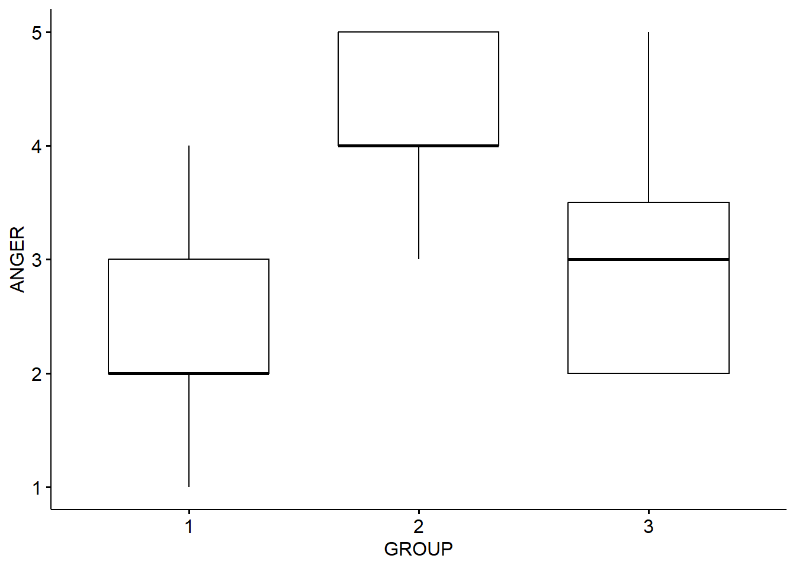
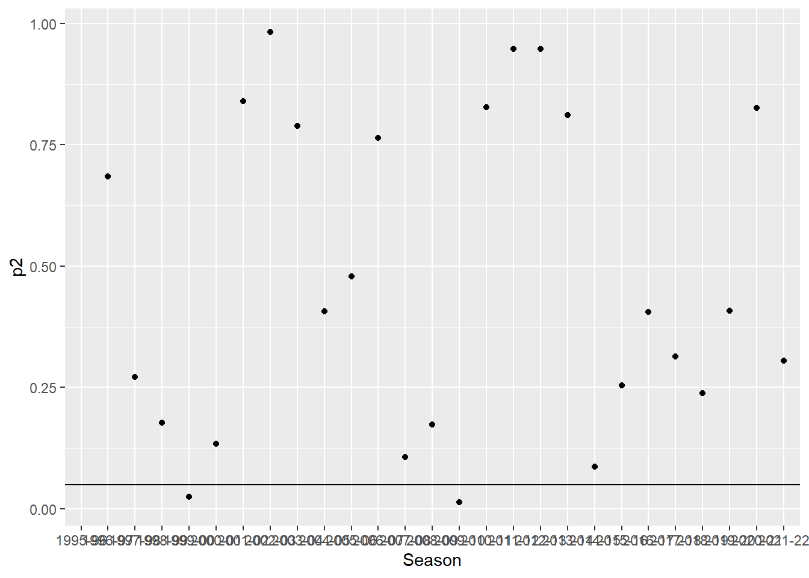

Chapter 8 ANOVA and Issues with Significance
Here, I’ll demonstrate the basic application of ANOVA on the simple 3-group case of the Ed Sheeran Study:
## # A tibble: 6 × 3
## ID GROUP ANGER
## <dbl> <dbl> <dbl>
## 1 1 1 2
## 2 2 2 5
## 3 3 1 2
## 4 4 3 3
## 5 5 2 4
## 6 6 3 2We need to tell R that GROUP is a factor variable not a numeric one:
Check it worked:
| Name | ED |
| Number of rows | 45 |
| Number of columns | 3 |
| _______________________ | |
| Column type frequency: | |
| factor | 1 |
| numeric | 2 |
| ________________________ | |
| Group variables | None |
Variable type: factor
| skim_variable | n_missing | complete_rate | ordered | n_unique | top_counts |
|---|---|---|---|---|---|
| GROUP | 0 | 1 | FALSE | 3 | 1: 15, 2: 15, 3: 15 |
Variable type: numeric
| skim_variable | n_missing | complete_rate | mean | sd | p0 | p25 | p50 | p75 | p100 | hist |
|---|---|---|---|---|---|---|---|---|---|---|
| ID | 0 | 1 | 23.00 | 13.13 | 1 | 12 | 23 | 34 | 45 | ▇▇▇▇▇ |
| ANGER | 0 | 1 | 3.22 | 1.17 | 1 | 2 | 3 | 4 | 5 | ▁▇▇▆▅ |
Let’s create a quick table of the group means
## # A tibble: 3 × 5
## GROUP variable n mean sd
## <fct> <fct> <dbl> <dbl> <dbl>
## 1 1 ANGER 15 2.33 0.816
## 2 2 ANGER 15 4.27 0.704
## 3 3 ANGER 15 3.07 1.03And now visualize that in a boxplot:

Hmmm….
Let’s run an ANOVA (we’re using the rstatix package here not Base R)
Much of the following is drawn from: https://www.datanovia.com/en/lessons/anova-in-r/
## ANOVA Table (type II tests)
##
## Effect DFn DFd F p p<.05 ges
## 1 GROUP 2 42 19.235 1.17e-06 * 0.478Results here suggest there is a significant effect (p-value is very small) rstatix also gives us an ‘effect size’ measure (ges, generalized eta-squared) which is also useful to us and suggests the effect is quite large. This can be interpreted similarly to a regression coefficient (which is also an effect size measure), and is the amount of variance in the dependent variable (Anger) that is explained by group membership.
However, ANOVA only tests the ‘general effect’ of the treatment / group. We don’t know whether this is because of the difference between all of the groups, or only some. E.g., is it that there is an effect of music in general (i.e. between Control and Ed, and Control and Music, but not between Ed and Music), or that Ed specifically is anger-inducing (in whcih case we would see an effect between Ed and Music, and Ed and Control, and not between Music and Control).
We can investigate this using Post-Hoc tests, which compare the individual groups. This has the potential for a multiple comparisons problem, which we will need to deal with.
Let’s take a look back to the slide deck…
## # A tibble: 3 × 9
## term group1 group2 null.value estimate conf.low conf.high p.adj
## * <chr> <chr> <chr> <dbl> <dbl> <dbl> <dbl> <dbl>
## 1 GROUP 1 2 0 1.93 1.17 2.70 0.000000734
## 2 GROUP 1 3 0 0.733 -0.0313 1.50 0.0625
## 3 GROUP 2 3 0 -1.2 -1.96 -0.435 0.00126
## # ℹ 1 more variable: p.adj.signif <chr>We can actually plot these results in a really effective way:
This very clearly tells us that it is the Ed Sheeran group (2)that is driving these results, and there isn’t much to choose between the control group, and the ‘music’ group.
Now, there are many other things that if we were doing ANOVA that we would also look to deal with - such as the various assumptions required of ANOVA, and so forth. But, they are beyond our scope in this class. Suffice to say that this has only scratched the surface of ANOVA so far.
8.1 Rate of Change in Football Goals per Season - Bonferroni Correction?
Here, I’m using data from https://www.footballhistory.org/league/premier-league-statistics.html
I hand-entered this into a spreadsheet, and calculated the additional stuff.
## # A tibble: 6 × 7
## Season Games Goals GPG SE Lower95CI Upper95CI
## <chr> <dbl> <dbl> <dbl> <dbl> <dbl> <dbl>
## 1 1995-96 380 988 2.6 31.4 926. 1050.
## 2 1996-97 380 970 2.55 31.1 909. 1031.
## 3 1997-98 380 1019 2.68 31.9 956. 1082.
## 4 1998-99 380 959 2.52 31.0 898. 1020.
## 5 1999-00 380 1060 2.79 32.6 996. 1124.
## 6 2000-01 380 992 2.61 31.5 930. 1054.You can see here I have calculated the standard errors from the yearly goal totals (which represent that year’s underlying rate of goal occurrence), then used that to calculate the 95% Confidence Interval limits
We can use these to create a nifty chart with the error bars…drawing from the code used by Spiegelhalter in his book for Figure 9.4 available on his github (linked in the code).

From this chart, and looking at the data itself, we can see that the 95% Intervals overlap, so it is hard to conclude that the underlying rate of goals has changed significantly year on year. Yes, even in the pandemic.
Remember though, the ONS suggest that it is over-stringent to rely on error bar overlap, so we can also use z-tests to directly test the assumption that the change is zero.
Rather than just use a z-value cutoff of 1.96 as we did last time, in the next data file, I have calculated the p-value (2 tailed as we do not hypothesize a direction for the difference) for the z-scores for the difference between each season, year-on-year.
## # A tibble: 6 × 11
## Season Games Goals GPG SE Lower95CI Upper95CI Change Z negged
## <chr> <dbl> <dbl> <dbl> <dbl> <dbl> <dbl> <dbl> <dbl> <dbl>
## 1 1995-96 380 988 2.6 31.4 926. 1050. NA NA NA
## 2 1996-97 380 970 2.55 31.1 909. 1031. -18 -0.407 -0.407
## 3 1997-98 380 1019 2.68 31.9 956. 1082. 49 1.10 -1.10
## 4 1998-99 380 959 2.52 31.0 898. 1020. -60 -1.35 -1.35
## 5 1999-00 380 1060 2.79 32.6 996. 1124. 101 2.25 -2.25
## 6 2000-01 380 992 2.61 31.5 930. 1054. -68 -1.50 -1.50
## # ℹ 1 more variable: p2 <dbl>Here, we can plot the p-values (2-tailed), and again we see (just like with the z-tests) that the same two seasons have significant differences.

We can see that the 1999-2000 season, and the 2009-10 seasons have p values less than 0.05
The question is are we suffering from the multiple comparisons problem? Should we correct for it? It’s hard to say actually. Of course, we are indeed running multiple tests, 29 in fact. So, the chance of a false positive is quite high, if the null was true in all cases. The Bonferroni correction would immediately reduce this, but at the cost of making none of our tests significant.
Further, the basis of these corrections is that the null hypothesis is true. What if it is the alternative hypothesis (that is, the H of an effect existing) that is true? In such cases, there can of course be no false positives. Here, you are increasing the chances of a false negative by reducing the chances of a false positive. So, what are the potential costs of each of these mistakes?
For example, Thomas Perneger’s 1998 paper in the BMJ is scathing about the Bonferroni adjustment. Take a look at https://www.bmj.com/content/316/7139/1236.full
Mind you, I am not saying that’s the final word, just that there are multiple perspectives on the issues!
It’s never as simple as it seems when making statistical decisions, is it?
8.2 Statistical Power
Different types of analysis and research design require different types of power calculation. In R, we can use the pwr package to calculate quite a few.
Let’s calculate the required sample size for the Ed Sheeran study we conducted earlier. Really, we should have done this before collecting data, but it’s a nice example to do it post hoc.
We don’t need the data, just the parameters of the experiment and analysis design.
So, we had 3 groups, and used ANOVA
Let’s set a significance of 0.05, a required power of 0.8, and assume the effect size is moderate (say 0.25)
##
## Balanced one-way analysis of variance power calculation
##
## k = 3
## n = 52.3966
## f = 0.25
## sig.level = 0.05
## power = 0.8
##
## NOTE: n is number in each groupSo, we really wanted to have around 50 in each group to have an 80% chance of detecting a moderate effect presuming the null was true.
You can see that my study (with only 15 in each group) was rather underpowered. However, if I had increased the effect size in the calculation to 0.5 (close to what the experiment suggested) this would have given me a result for n closer to what I actually used. However, you’d have to be VERY confident in the size of your likely effect to actually do that I think.